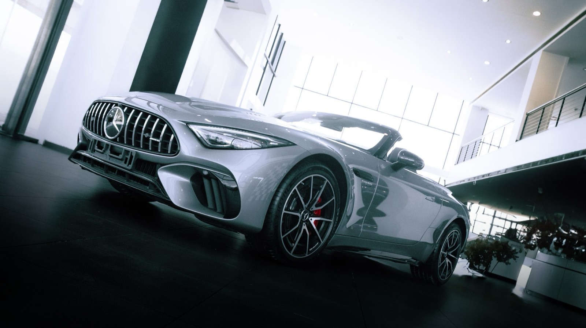
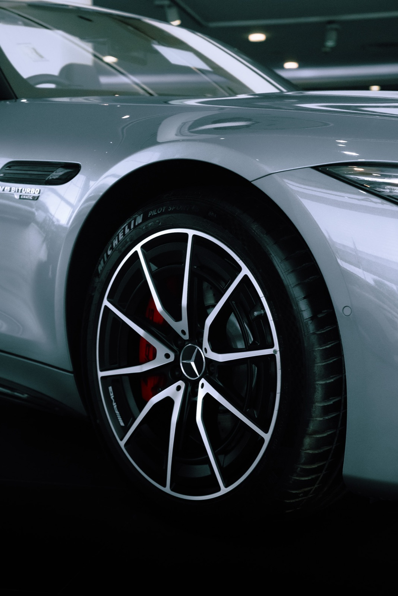
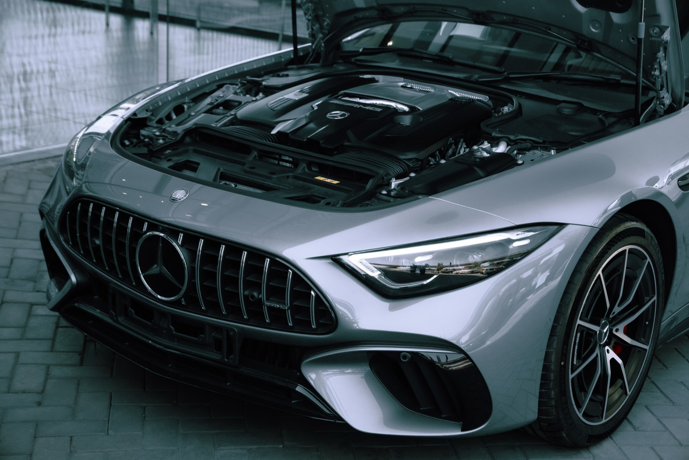
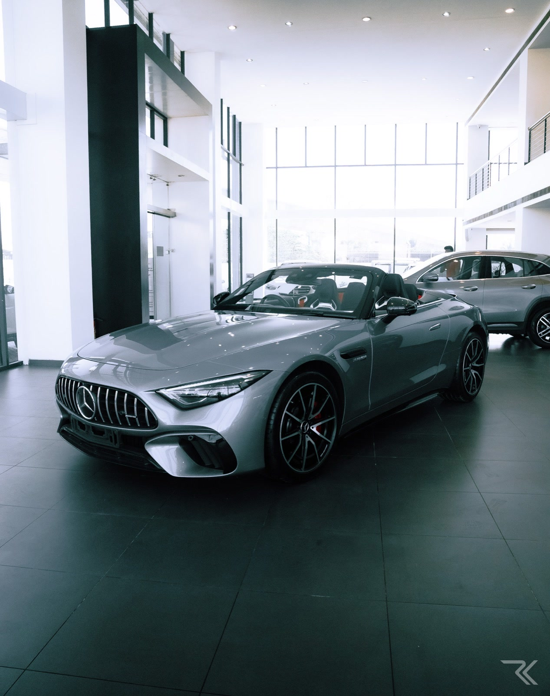
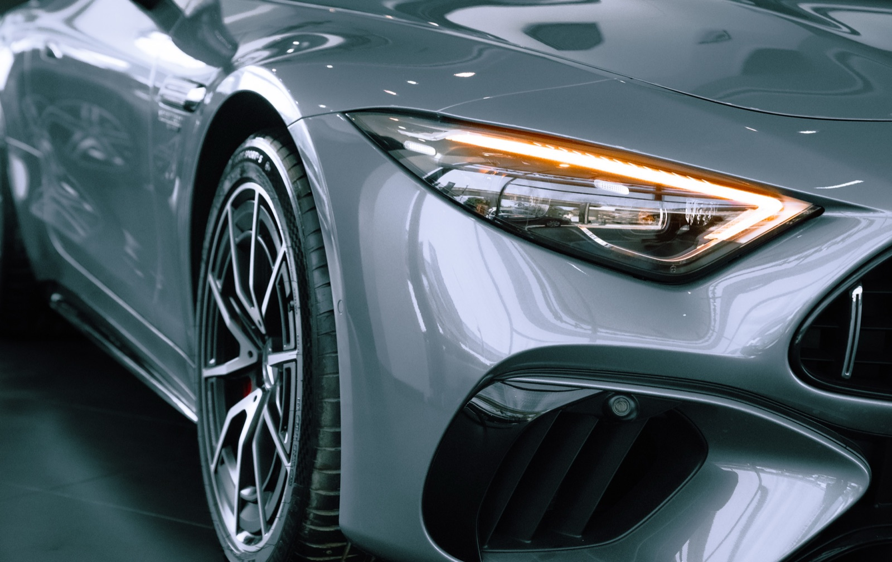
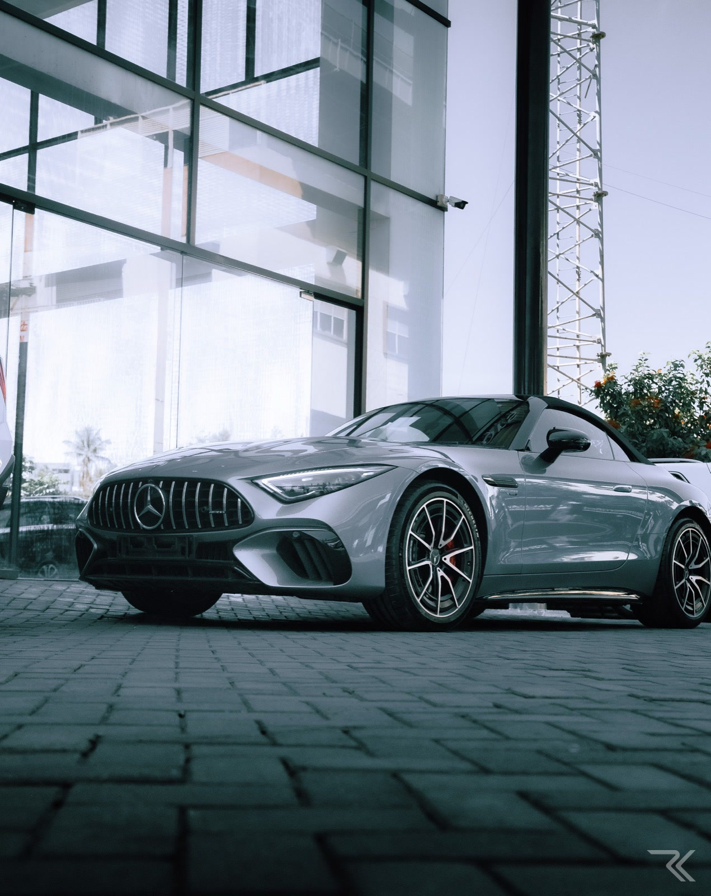

The Brief
A private shoot for the client buying the car, made on the showroom floor before it left with them. One car, one room, and a polished floor that mirrors everything in it.
An automotive shoot lives or dies on reflection, and a showroom gives you a mirror in every direction. That is either a problem or the entire look, depending on how you approach it. I shot low and close, letting the hard ceiling light wrap the body panels and treating the glass wall behind the car as a second source rather than something to hide.
Nothing here is a render. The edit holds the silver cool and pulls everything else toward black, so the car stays the only thing in the frame with real luminance.
Selected Frames





Full Case Study
The complete project, with process notes and the finished film, lives on Behance.
View On Behance →Next Project